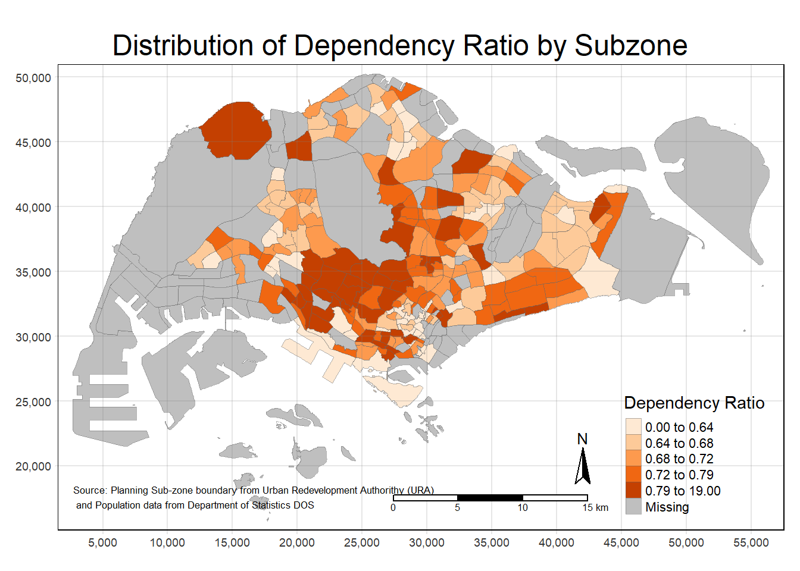
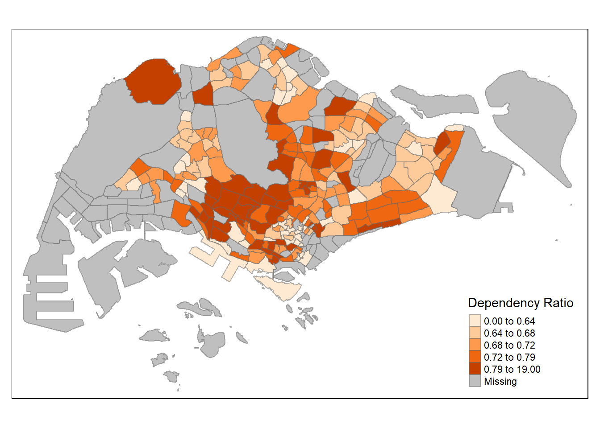

Rows: 984656 Columns: 7
── Column specification ────────────────────────────────────────────────────────
Delimiter: ","
chr (5): PA, SZ, AG, Sex, TOD
dbl (2): Pop, Time
ℹ Use `spec()` to retrieve the full column specification for this data.
ℹ Specify the column types or set `show_col_types = FALSE` to quiet this message.
Data Preparation
Data Wrangling
Performing data wrangling on the data. I have adjusted the rowSums for the grouping as the order of columns may be sorted differently. For example, age group 5_to_9 is under column 14, not 12.
`summarise()` has grouped output by 'PA', 'SZ'. You can override using the
`.groups` argument.
popdata2020
# A tibble: 332 × 7
PA SZ YOUNG `ECONOMY ACTIVE` AGED TOTAL DEPENDENCY
<chr> <chr> <dbl> <dbl> <dbl> <dbl> <dbl>
1 Ang Mo Kio Ang Mo Kio Town Cen… 1290 2760 760 4810 0.743
2 Ang Mo Kio Cheng San 5640 16460 6050 28150 0.710
3 Ang Mo Kio Chong Boon 5100 15000 6470 26570 0.771
4 Ang Mo Kio Kebun Bahru 4620 13010 5120 22750 0.749
5 Ang Mo Kio Sembawang Hills 1880 3630 1310 6820 0.879
6 Ang Mo Kio Shangri-La 3330 9050 3610 15990 0.767
7 Ang Mo Kio Tagore 1940 4480 1530 7950 0.775
8 Ang Mo Kio Townsville 4190 11950 5100 21240 0.777
9 Ang Mo Kio Yio Chu Kang 0 0 0 0 NaN
10 Ang Mo Kio Yio Chu Kang East 1110 2410 750 4270 0.772
# ℹ 322 more rows
Joining attribute and geospatial data
Setting all location data to uppercase and joining it with the Master Plan 2014 data.
tm_shape(mpsz_pop2020)+tm_fill("DEPENDENCY", style ="quantile", palette ="Oranges", title ="Dependency Ratio") +tm_layout(main.title ="Distribution of Dependency Ratio by Subzone",main.title.position ="center", frame =TRUE) +tm_borders(lwd =0.1, alpha =0.5) +tm_compass() +tm_scale_bar() +tm_grid(alpha =0.2) +tm_credits("Source: Planning Sub-zone boundary from Urban Redevelopment Authorithy (URA)\n and Population data from Department of Statistics DOS", position =c("left", "bottom"))

Map using tm_polygons()
tm_shape(mpsz_pop2020) +tm_polygons("DEPENDENCY")
Data classification methods of tmap
Quantile:
tm_shape(mpsz_pop2020)+tm_fill("DEPENDENCY", style ="quantile", palette ="Oranges", title ="Dependency Ratio", n =5) +tm_borders(alpha =0.5)

Equal:
tm_shape(mpsz_pop2020)+tm_fill("DEPENDENCY", style ="equal", palette ="Oranges", title ="Dependency Ratio", n =5) +tm_borders(alpha =0.5)